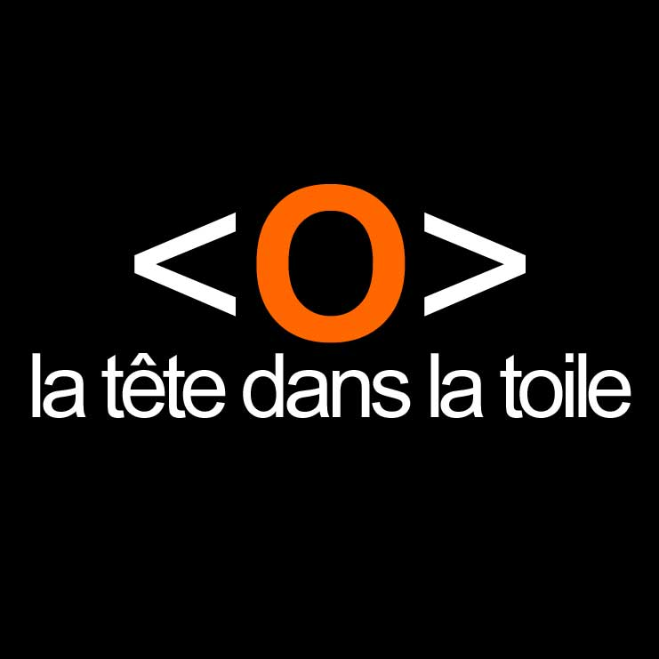

<section id="experience" class="section py-16">
    <div class="container mx-auto px-4 max-w-4xl">
        <h2 class="text-3xl font-bold mb-16 text-center font-space-mono">Expériences Professionnelles</h2>

        <!-- Expérience 1 -->
        <div class="flex items-start bg-white dark:bg-gray-800 p-6 rounded-lg shadow-md mb-6">
            
            <div>
                <h3 class="text-xl font-semibold">Stage Développeur Fullstack</h3>
                <a href="https://www.latetedanslatoile.fr" class="text-gray-600 dark:text-gray-400">La tête dans la toile Jan 2025 Fev 2025</a>
                <ul class="list-disc list-inside text-gray-700 dark:text-gray-300 mt-2">
                    <li>Changement de CMS pour le site <u><a href="https://www.cepia.team">Cepia</a></u></li>
                    <li>Optimisation des performances des API RESTful</li>
                    <li>Gestion de bases de données PostgreSQL</li>
                </ul>
            </div>
        </div>

        <!-- Expérience 2 -->
        <div class="flex items-start bg-white dark:bg-gray-800 p-6 rounded-lg shadow-md mb-6">
            
            <div>
                <h3 class="text-xl font-semibold">Stage DevOps</h3>
                <p class="text-gray-600 dark:text-gray-400">Entreprise B - Juin 2021 à Déc 2021</p>
                <ul class="list-disc list-inside text-gray-700 dark:text-gray-300 mt-2">
                    <li>Automatisation des déploiements CI/CD avec GitLab</li>
                    <li>Surveillance des systèmes via Prometheus et Grafana</li>
                    <li>Gestion des conteneurs Docker et Kubernetes</li>
                </ul>
            </div>
        </div>

        <!-- Expérience 3 -->
        <div class="flex items-start bg-white dark:bg-gray-800 p-6 rounded-lg shadow-md">
            
            <div>
                <h3 class="text-xl font-semibold">Assistant Technique IT</h3>
                <p class="text-gray-600 dark:text-gray-400">Entreprise C - Sept 2020 à Mai 2021</p>
                <ul class="list-disc list-inside text-gray-700 dark:text-gray-300 mt-2">
                    <li>Support technique pour les utilisateurs internes</li>
                    <li>Maintenance des réseaux et des systèmes informatiques</li>
                    <li>Rédaction de documentation technique</li>
                </ul>
            </div>
        </div>
    </div>
</section>
